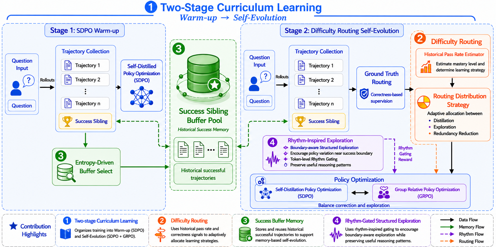
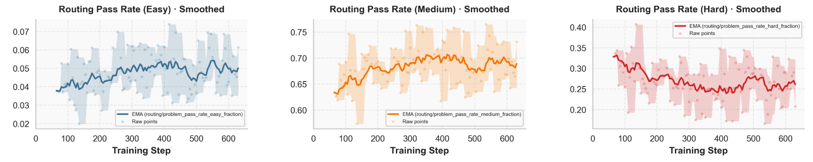
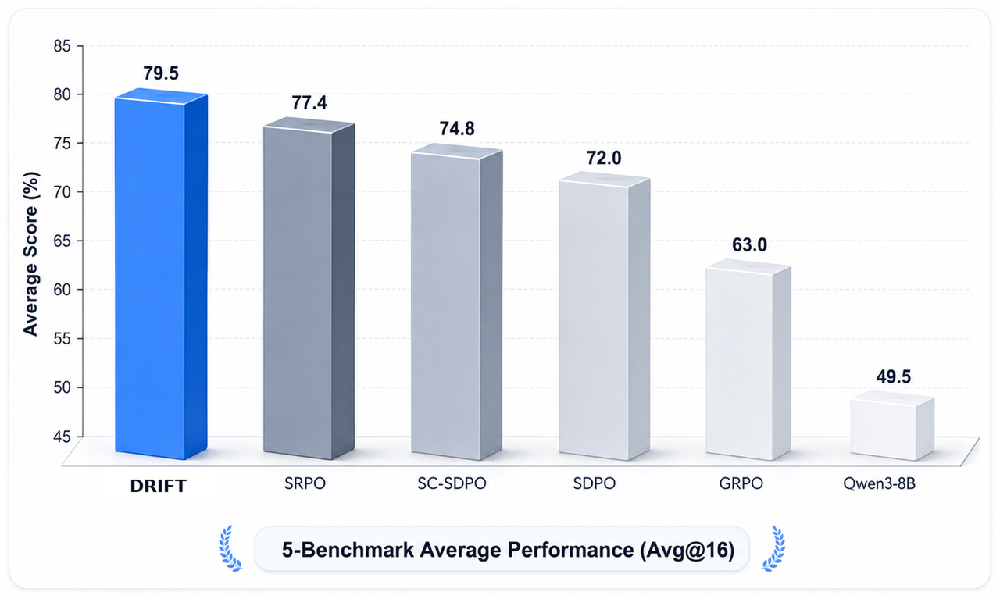
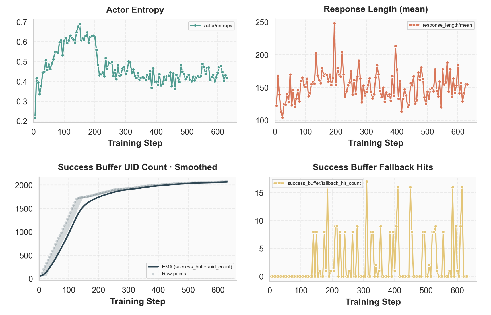
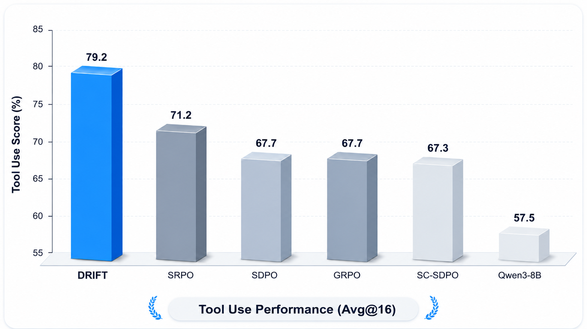
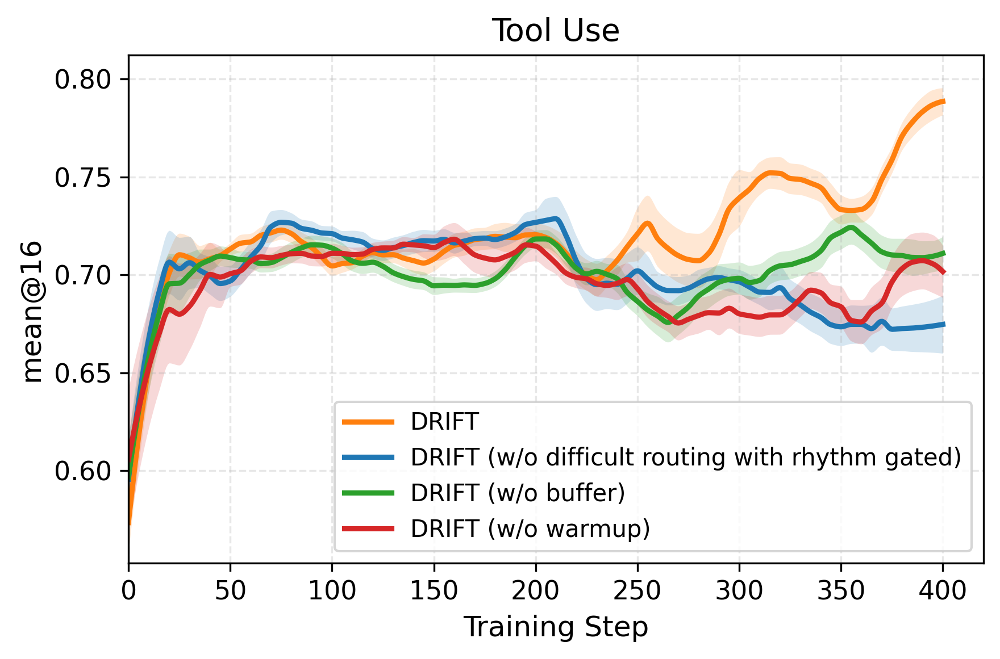

LLM的自我进化：模型自己生成训练数据、自己从中学习：是减少对人类标注依赖的关键路径。但当前的自蒸馏和RL方法存在一个共同盲点：它们对所有问题用相同的优化策略，不考虑模型在不同问题上的掌握程度。
DRIFT提出了一种问题级自适应优化框架，通过四个组件的协同工作：课程教师（Curriculum Teacher）提供分阶段训练信号，难度路由（Difficulty Routing）按问题掌握度分配优化强度，节律门控探索（Rhythm-Gated Exploration）在token级别结构化探索，成功缓冲池（Success Buffer）存储利用成功轨迹。在数学推理和工具调用基准上，DRIFT全面超越GRPO和SDPO基线。
DRIFT是一个在线自我进化策略优化框架，围绕四个核心组件构建。下图展示了DRIFT的整体流程：

课程教师是DRIFT的训练策略管理器，分为两个阶段：
阶段一：自蒸馏快速热身。使用自蒸馏进行快速初始化，积累经验轨迹。这一阶段让模型快速达到一个基本水平，为后续的精细优化做准备。
阶段二：稳定优化。切换到自蒸馏与RL的混合优化，利用RL的探索能力和自蒸馏的稳定监督信号。阶段二的切换时机由模型在验证集上的表现动态决定。
难度路由是DRIFT的核心创新。它在两个层面动态分配优化信号：
问题层面：根据模型对每个问题的掌握程度，动态调整RL更新的强度。对于模型已掌握的问题，降低更新强度避免过度优化；对于模型尚未掌握的问题，增加更新强度。
Token层面：在细粒度上控制每个token的优化信号，确保模型在关键推理步骤上获得足够的监督。
下图展示了难度路由在不同问题上的动态调整效果：

节律门控探索是DRIFT的探索策略组件。它通过一个节律门控机制在token级别进行结构化探索，在模型的推理路径中引入受控的随机性，避免陷入局部最优。
与传统的无结构探索不同，节律门控探索根据当前token的预测不确定性动态调整探索强度：在不确定性高的token上增加探索，在确定性高的token上减少探索。
成功缓冲池存储历史成功轨迹，用于重放训练。每当模型成功解决一个问题，完整的推理轨迹被存入缓冲池。在后续训练中，缓冲池中的成功轨迹被采样用于额外的训练信号。
这种机制类似于RL中的经验回放，但专门针对推理任务设计：成功轨迹不仅提供正样本，还作为课程学习的参考标准，帮助模型在类似问题上更快地找到正确推理路径。
在数学推理和工具调用两个领域的实验结果显示：
数学推理：在AIME基准上，DRIFT相比GRPO提升15.6%，相比SDPO提升9.8%。在MATH基准上分别提升5.5% 和3.2%。下图左展示了不同方法在AIME和MATH上的性能对比。
工具调用：在SciKnowEval和工具使用基准上，DRIFT同样全面超越GRPO和SDPO，展示了框架在非数学推理任务上的泛化能力。
训练动态：下图右展示了DRIFT训练过程中的难度路由动态变化，可以看到模型在不同问题上的掌握度随训练推进而逐步提升。


DRIFT的收敛性分析显示，相比GRPO和SDPO，DRIFT的训练曲线更平滑，收敛更快。下图1展示了不同方法的收敛曲线对比。
消融实验（下图2）验证了每个组件的贡献：难度路由贡献最大，其次是节律门控探索，成功缓冲池和课程教师也各有显著贡献。去掉任何一个组件都会导致性能下降。


参考：https://arxiv.org/abs/2606.30345